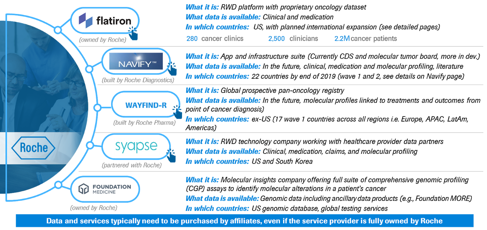

Real-world Data (RWD)

Real-World Data (RWD) is a source of Meaningful Data at Scale (MDAS) for our PHC engine. It refers to data relating to patient health routinely collected from a variety of sources outside of traditional controlled clinical interventional trials, under real-life clinical practice. Real-World Evidence (RWE) refers to the evidence derived from the analysis and/or synthesis of RWD.1
Electronic Medical Record (EMR) is a source of RWD. EMR is an electronic version of a patient’s medical history, that is maintained by the provider over time, and includes structured input data fields covering key clinical data relevant to a patients care under a particular provider, including demographics, progress notes, medications, vital signs, past medical history, laboratory data and radiology reports. Some of these items may be stored as unstructured fields (electronic copies of notes/reports, not entered in a pre-determined data field), such as progress notes or radiology reports. 2
Click button below to see:Roche and Roche partner examples/initiatives
Smarter & more efficient R&D – Complement/replace trials (virtual control arms); Draw insights on patient populations to accelerate clinical development (e.g., informing study design); Inform the development of future treatments, taking information from patient’s bedside back to the research bench. 4
Improved access & personalized care - Collecting RWD allows us to build a bigger picture, for the benefit of the individual patient, including optimize treatment approaches; reduce times to regulatory decisions; ensure efficient post-approval monitoring 1,3
Roche’s RWD assets span sources including platforms, registries, and genomic databases. 5
Roche is using RWD to advance Research, Regulatory, Access, Medical and Commercial objectives. 5
Global use cases of RWD
Global/Regional
Local use cases of RWD in close collaboration with Global on e.g., messaging-strategy
Key drivers/considerations
Access to and use of data (data policy): 5Where RWD Fit Within PHC
systems
Considerations
pathway
Acceptance of
innovative solutions